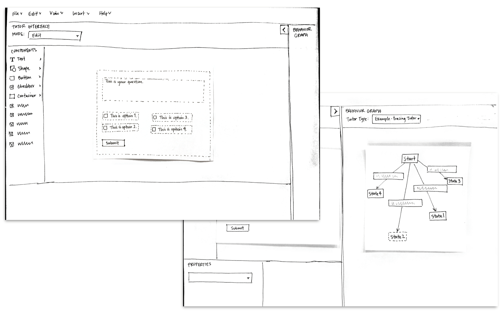
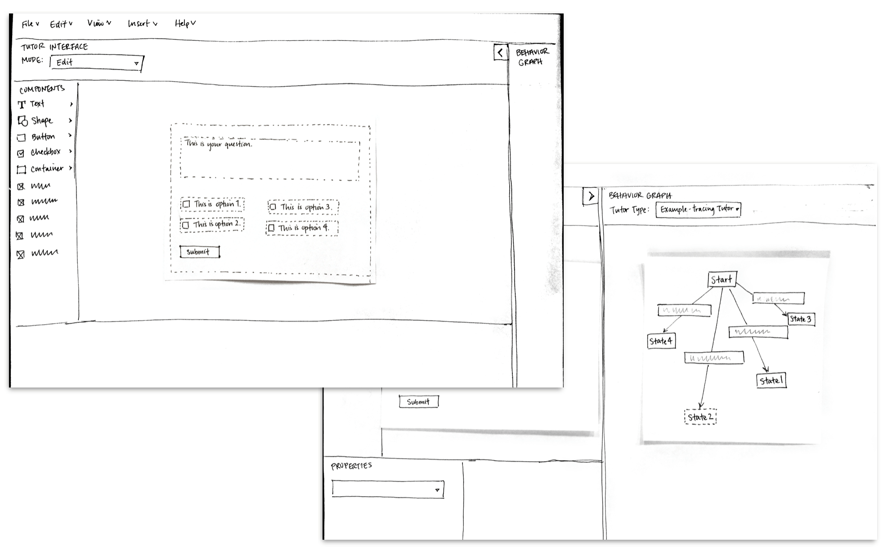
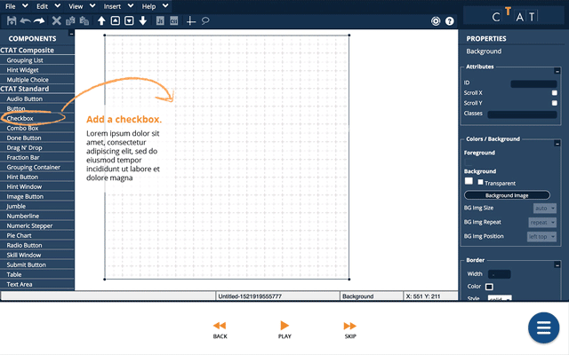
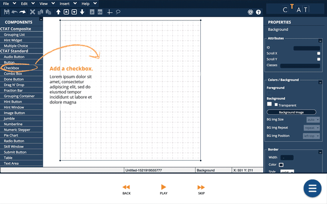

CTAT Rewrite
Challenge
To research our client's software CTAT's barriers to adoption, and to improve the software to increase its usage in higher education settings.
Outcome
The testing and partial build of new web pages and tutorials for CTAT.
Role Design Lead
Team Grace Guo (project manager), Chris Feng (UX), Siting Jin (developer)
Overview
What is CTAT?
The Cognitive Tutor Authoring Tools (CTAT) is a tool suite for creating online intelligent tutors. CTAT allows instructors to easily create problem sets and provide contextual feedback to students as they work through them.

Our Redesign
We focused on guiding users to explore and learn about intelligent, or cognitive, tutors. Our research showed that a better understanding of CTAT led to greater interest in using it and an improved perception of its usefulness. Our deliverables included a redesigned website, a tutor gallery and a series of tutorials. These components work together to teach users about cognitive tutors and how CTAT facilitates their creation.
Users

Profile
- Profession: Professor, instructional designer
- Age: 30-50
- Works in academia
- At least somewhat comfortable with screen-based technology
User Needs
- To efficiently create challenging and original problem sets for students
- To provide students with guidance and feedback
Goals & Challenges
Our users are educators in university-level settings who prepare course material year after year. Challenging content and detailed feedback are both crucial to students' success, yet providing both is time consuming and there is no easy way around it.
Research
Key Findings
Through competitive analysis and interviews with professors, we learned about the problem-writing process and some useful features of other educational technologies. CTAT is an extremely powerful tool, but we identified problems in 3 areas currently preventing its adoption:
- UI/UX: CTAT's interface is unintuitive and developer- (not user-) centered, creating a frustrating and unappealing user experience.
- Troubleshooting: A lack of comprehensive documentation or an online community prevents effective troubleshooting.
- Onboarding: New users find CTAT overly complicated, rather than appreciating the advanced kind of feedback it can provide.
Of the 3, we determined that we could only reasonably affect #2 and #3, as we had no access to CTAT’s code base.
It's not that other tools are better than CTAT. But for the types of problems some professors need, CTAT is too much, and they won't take time to learn it.
Design Goals
We categorized the main points from our research into three stages of usage. Recognizing that we had little control over the software itself, we opted to focus on:
- Helping users understand the value of CTAT (pre-use)
- Providing documentation for better learning (initial use)

Prototypes
We focused on designing more effective tutorials, hypothesizing that they would increase users’ interest and engagement with CTAT. In testing, we asked users to build a problem interface following our tutorials, and afterwards what they retained. We mainly wanted to improve the text-heaviness and navigation of the current tutorials.
During this process, I created interactive prototypes for testing and also iterated on interface and visual design for the tutorials.
Low-Fidelity Prototypes
Initially we tested two tutorial formats: screenshots with light text instructions, and spoken instructions with a demonstration (using a paper prototype). We found that text provided clearer explanations, which helped users understand the software better, but demonstrations were easier to follow to complete the task.
 

Mid-Fidelity Prototypes
In the next rounds we worked to find a good balance between the two formats for better learning and retention. We also worked out details like animation speed and navigation controls to improve usability.


User Feedback
Compared to CTAT's current tutorials, our format felt more approachable according to users. We organized the feedback we received into specific areas to improve for any future iterations, ranging from written content to interactions and usability.

The [tutorial] made me want to know more. If it only uses a few things to make something decent, I want to know what else it can do.
Other Process
Website
We decided to rework CTAT’s website as a whole, because we realized the tutorials by themselves were not providing enough context about CTAT’s use cases, background, and miscellaneous features. I prototyped the web pages though they were not tested as extensively as our tutorials. Below are wireframes and older drafts.


Visual Components
As the team's designer, I spent some time developing a new design system for the site and tutorials, exploring components and layouts, and working on other visual nuances.
Typography & Icons

Callouts


Layout
 



Final Deliverables
Website
Our new website hosts a tutor gallery and a series of tutorials to teach new users about CTAT. The style and language of the site aims to be approachable and soothing.
Tutor Gallery
The gallery allows users to see and interact with tutors made with CTAT, demonstrating what they can do and serving as inspiration for novices.

Tutorials
The bulk of our work was focused here. The tutorials are designed as step-by-step guides to teach users about CTAT and the power of its features.

Learning Outcomes
- Deriving design goals from open-ended user research
- Balancing user needs with the client's ask to make design decisions
- Usability testing and iterative design
Reflection
Though we received positive feedback, we were not able to fully test the effectiveness of our design on CTAT adoption in our limited time frame. In our testing, users showed better learning and understanding of CTAT, but this may not translate to increased adoption over time.
Some possible next steps for this project might include:
- Deploying and evaluating the long-term effect of the new website and its features on CTAT adoption. A good indication of tutorial effectiveness could be a correlated upward trend between views and tutors created.
- Creating a greater range of tutorials. Users who are considering CTAT for its superior flexibility may want to learn how to use a wider range of features. Tutorials that can make more complex features more learnable would appeal to these users and help them create effective tutors for a diverse range of domains.